SECCIÓN
MANTENIMIENTO Y REPARACIÓN
SERVICIO EN VEHÍCULO
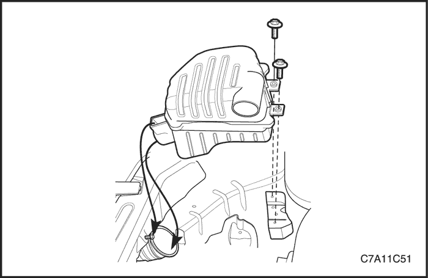


Alternador
Procedimiento de desmontaje
- Desconecte el cable negativo de la batería.
- Desmonte la cubierta embellecedora del motor. Consulte la Sección 1C2, Mecánica del motor HFV6 3.2L.
- Desmonte el conjunto de filtro del aire. Consulte la Sección 1C2, Mecánica del motor HFV6 3.2L.
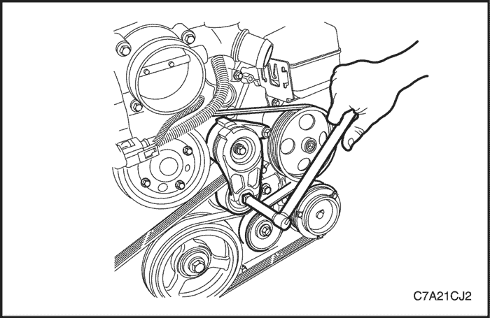
- Gire el tensor de la correa de accionamiento de los accesorios en el sentido de las agujas del reloj para reducir la tensión de la correa.
- Al tiempo que sujeta el tensor en la posición de tensión reducida, desconecte la correa.
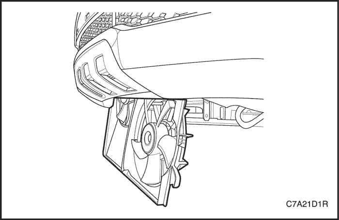
- Desmonte el conjunto del ventilador de refrigeración. Consulte la Sección 1D3, Sistema de refrigeración del motor HFV6 3.2L.
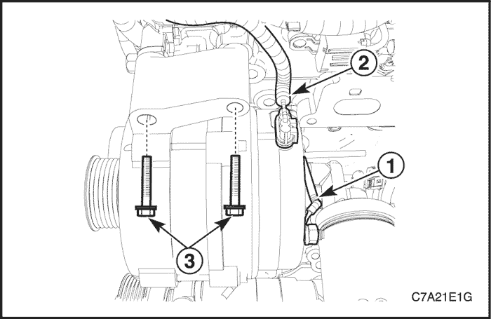
- Quite del alternador la tuerca que sujeta el alternador al cable principal de la batería (1).
- Desenchufe del alternador el conector del cableado (2).
- Quite los tornillos de fijación superiores del alternador (3).
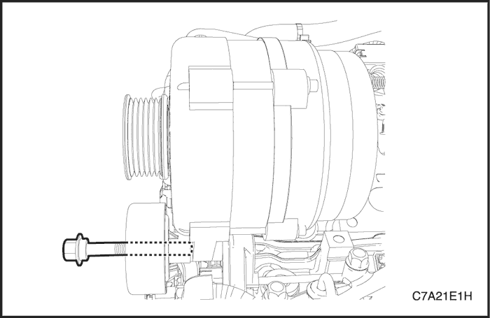
- Afloje el tornillo pasante entre la polea loca de la correa de accionamiento de los accesorios y el alternador
- Sujete el alternador y quite el tornillo pasante.
- Desmonte el alternador.
procedimiento de montaje
- Coloque el alternador y apriete con la mano el tornillo pasante entre la polea loca de la correa de accionamiento de los accesorios y el alternador.
Aviso: No apriete por el momento el tornillo pasante entre la polea loca de la correa de accionamiento de los accesorios y el alternador.
- Coloque los tornillos de fijación superiores del alternador (3).
Apretar
- Apriete los tornillos de fijación superiores del alternador hasta 58 N•m (43 lb-pie).
- Apriete el tornillo pasante entre la polea loca de la correa de accionamiento de los accesorios y el alternador hasta 50 N•m (37 lb-pie).
- Coloque en el alternador la tuerca de fijación que lo une al cable principal de la batería (1).
Apretar
Apriete la tuerca de fijación del alternador al cable principal de la batería hasta 15 N•m (11 lb-pie).
- Enchufe el conector del cableado (2) al alternador.
- Gire el tensor de la correa de accionamiento de los accesorios en sentido de las agujas del reloj.
- Al tiempo que sujeta el tensor en la posición de tensión reducida, monte la correa.
- Monte el conjunto del ventilador de refrigeración. Consulte la Sección 1D3, Sistema de refrigeración del motor HFV6 3.2L.
- Monte el conjunto del filtro de aire. Consulte la Sección 1C2, Mecánica del motor HFV6 3.2L.
- Monte el conjunto de la cubierta embellecedora. Consulte la Sección 1C2, Mecánica del motor - HFV6 3.2L.
- Conecte el cable negativo de la batería.
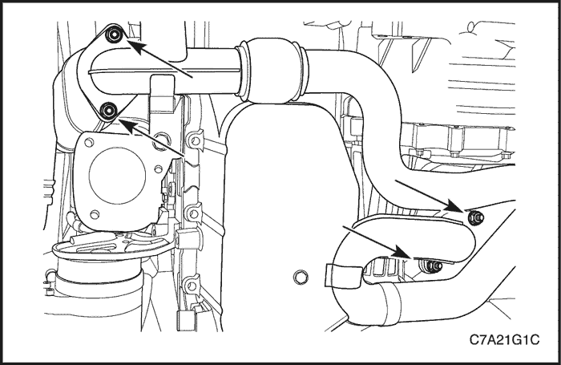
Motor de arranque
Procedimiento de desmontaje
- Desconecte el cable negativo de la batería.
- Desmonte el tubo de escape delantero. Consulte la Sección 1G3, Sistema de escape del motor - HFV6 3.2L.
- Desmonte el convertidor de minioxidación del banco 2. Consulte la Sección 1G3, Sistema de escape del motor - HFV6 3.2L.
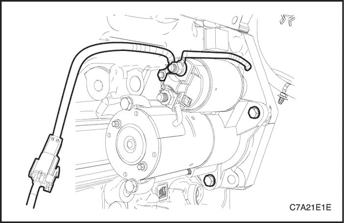
- Quite la tuerca que sujeta el cable principal de la batería del solenoide del motor de arranque.
- Desconecte del cable del mazo de cables principal del motor el conector del cable del motor de arranque.
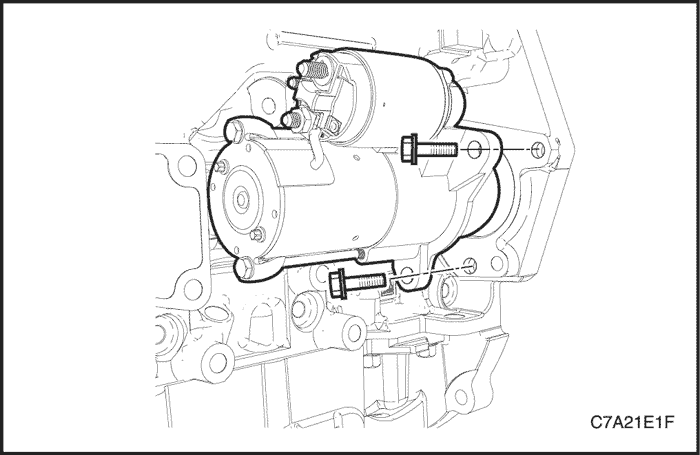
- Quite los tornillos de fijación del motor de arranque.
- Desmonte el conjunto del motor de arranque.
- Quite la tuerca de fijación del solenoide del motor de arranque al cable del mazo de cables principal del motor, si fuera necesario.
procedimiento de montaje
- Coloque la tuerca de fijación del solenoide del motor de arranque al cable del mazo de cables principal del motor, si fuera necesario.
Apretar
Apriete la tuerca de fijación del solenoide del motor de arranque al cable del mazo de cables principal del motor hasta 10 N•m (89 lb-pulg.).
- Monte el conjunto del motor de arranque.
Apretar
Apriete los tornillos de fijación del conjunto del motor de arranque hasta 45 N•m (33 lb-pie).
- Coloque en el solenoide del motor de arranque la tuerca de fijación que lo une al cable de la batería.
Apretar
Apriete la tuerca de fijación del solenoide del motor de arranque al cable principal de la batería hasta 15 N•m (11 lb-pie).
- Enchufe el conector del cable del mazo de cables principal del motor.
- Monte el convertidor de minioxidación del banco 2 en el tubo de escape delantero. Consulte la Sección 1G3, Sistema de escape del motor - HFV6 3.2L.
- Conecte el cable negativo de la batería.
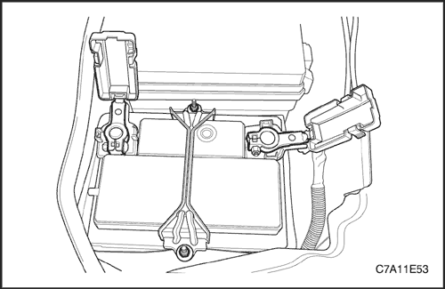
Batería y bandeja de batería
Procedimiento de desmontaje
- Desconecte el cable negativo de la batería y, a continuación, el cable positivo.
- Afloje las tuercas que fijan el soporte de la barra de retención de la batería.
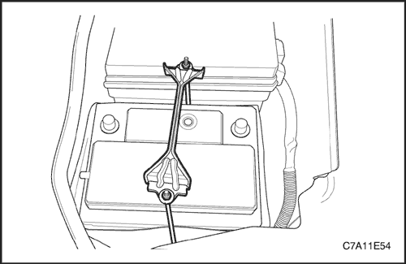
- Retire el soporte de la barra de retención de la batería con sus tuercas.
- Desmonte la batería de la bandeja portabatería.
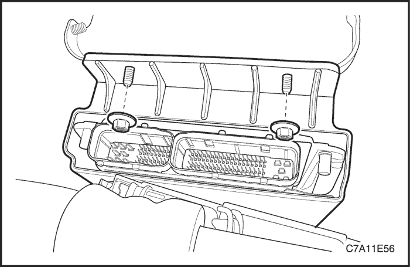
- Desmonte el ECM. Consulte la Sección 1F3, Controles del motor - HFV6 3.2L.
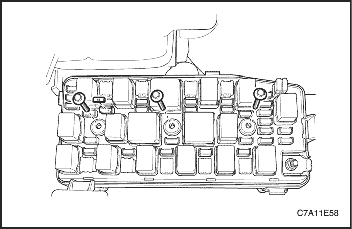
- Desmonte la tapa superior del bloque de fusibles del motor.
- Quite los tornillos de fijación del bloque de fusibles del motor.
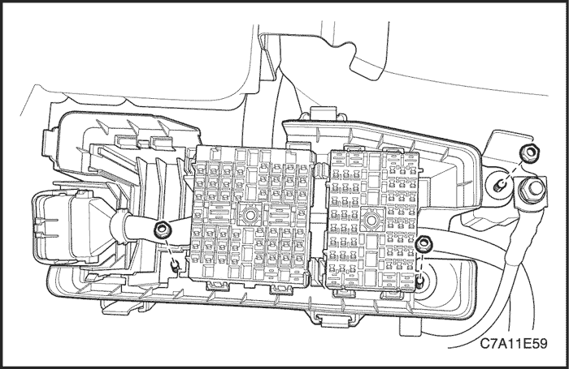
- Desmonte la caja de fusibles del motor de la tapa inferior.
- Quite las tuercas de fijación de la tapa inferior del bloque de fusibles del motor.
Aviso: Desmonte la bomba de aceite de la dirección asistida para facilitar la extracción de la caja de fusibles del motor, si fuera necesario.
- Separe el bloque de fusibles del motor de los tornillos soldados de la bandeja portabatería y el bastidor de la carrocería.
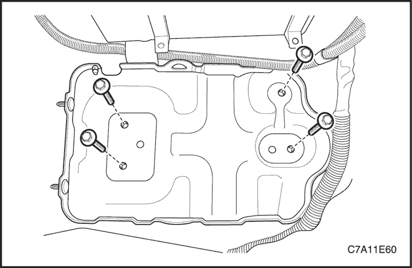
- Compruebe si la bandeja portabatería presenta signos claros de daños o grietas.
- Quite los tornillos de fijación de la bandeja portabatería.
- Desmonte la bandeja portabatería.
procedimiento de montaje
- Monte la bandeja portabatería.
- Coloque los tornillos de fijación de la bandeja portabatería.
Apretar
Apriete los tornillos de la bandeja portabatería hasta 10 N•m (89 lb-pulg.).
- Instale el bloque de fusibles del motor.
Apretar
Apriete las tuercas de fijación de la tapa inferior del bloque de fusibles del motor hasta 10 N•m (89 lb-pulg.).
- Coloque los tornillos de fijación del bloque de fusibles del motor.
Apretar
Apriete los tornillos de fijación del bloque de fusibles del motor hasta 3 N•m (27 lb-pulg.).
- Monte la tapa superior del bloque de fusibles del motor.
- Instale el ECM. Consulte la Sección 1F3, Controles del motor - HFV6 3.2L.
- Monte la batería.
Apretar
Apriete las tuercas de fijación del soporte de barra de retención de la batería hasta 4 N•m (35 lb-pulg.).
- Conecte el cable positivo de la batería.
- Conecte el cable negativo de la batería.
REPARACIÓN DE LA UNIDAD

MOTOR DE ARRANQUE
procedimiento de desmontaje (desarmado, desensamble, desensamblaje)
- Desmonte el motor de arranque. Consulte el apartado "Motor de arranque" de esta sección.
- Quite los tornillos pasantes del motor de arranque.

- Desmonte el conjunto portaescobillas y el armazón del colector.
- Compruebe si las escobillas, los muelles de expulsión y los portaescobillas están dañados o desgastados. Sustituya el conjunto si fuera necesario.
- Compruebe el inducido para ver si gira libremente. Si no es así, desarme el conjunto inmediatamente, comenzando por el paso 14 de este procedimiento. De lo contrario, someta al inducido a una comprobación en vacío.

Aviso: Complete la prueba en el menor tiempo posible para evitar el calentamiento excesivo del solenoide y no dañarlo.
Importante: Si el consumo de corriente especificado no incluye el del solenoide, deduzca de la lectura del inducido el consumo de corriente del bobinado de contención de dicho solenoide.
- Para comenzar la prueba en vacío, cierre el interruptor y compare las lecturas de las rpm, de la intensidad de corriente y de la tensión con las especificaciones. Consulte el apartado "Especificaciones del motor de arranque" de esta sección. Efectúe las desconexiones sólo con el interruptor abierto. Utilice los resultados de la prueba como se detalla a continuación:
- El consumo de corriente nominal y la velocidad en vacío indican una situación normal del motor de arranque.
- Una velocidad del motor baja en combinación con un consumo elevado de corriente es señal de una fricción excesiva causada por cojinetes desgastados, sucios o apretados, de un eje del inducido doblado o en cortocircuito o de bobinas inductoras en cortocircuito.
- El no funcionamiento con un consumo de corriente elevado indican una derivación a masa directa de los terminales o de los inductores o unos cojinetes "gripados".
- La falta de funcionamiento sin consumo de corriente indica la existencia de algún circuito de los inductores abierto, bobinas inductoras abiertas, muelles de escobillas rotos, escobillas desgastadas, un aislamiento excesivo entre las delgas del colector, u otras causas que pudieran impedir el contacto entre las escobillas y el colector.
- Una velocidad baja en vacío y un consumo, también bajo, de corriente indican una resistencia interna elevada y un consumo de corriente interno alto, lo que suele significar unos inductores en cortocircuito.

- Quite los tornillos del conjunto del solenoide.
- Quite la tuerca del conector del inductor. Desenchufe el conector del inductor.

- Desmonte el muelle de retorno de pistón.

Importante: Si no se desmonta el solenoide del motor de arranque, se deben desmontar los bornes de cinta del conector del terminal del solenoide antes de efectuar estas pruebas.
- Compruebe las bobinas del solenoide mediante la verificación del consumo de corriente.
- Compruebe los bobinados de contención conectando un amperímetro en serie con la tensión de 12 voltios de la batería, al terminal del interruptor y a masa.
- Conecte una resistencia de placas de carbón a la batería.
- Ajuste la tensión a 10 voltios. La lectura del amperímetro debe estar entre 13 y 19 amperios. La corriente disminuirá a medida que se calienten los bobinados. Las lecturas de consumo de corriente por encima de las especificaciones indican la existencia de espiras en cortocircuito o derivadas a masa en los bobinados del solenoide. En ambos casos, es necesario sustituir el solenoide. Las lecturas de consumo de corriente que estén por debajo de las especificaciones indican una resistencia excesiva. La ausencia de lectura indica un circuito abierto.
Importante: La corriente descenderá a medida que se calienten los bobinados. Las lecturas de consumo de corriente por encima de las especificaciones indican la existencia de espiras en cortocircuito o derivadas a masa en los bobinados del solenoide. En ambos casos, es necesario sustituir el solenoide. Las lecturas de consumo de corriente que estén por debajo de las especificaciones indican una resistencia excesiva. La ausencia de lectura indica un circuito abierto.
- Compruebe los dos bobinados, conectándolos según la prueba anterior.
- Conecte a masa el terminal del solenoide del motor.
- Ajuste la tensión a 10 voltios. La lectura del amperímetro debe estar entre 59 y 79 amperios.
- Compruebe las conexiones y sustituya el solenoide si fuera necesario.

- Extraiga el armazón polar con el conjunto del inducido adjunto, deslizándolo hacia fuera del conjunto del motor de arranque.
- Desmonte la protección.

- Separe el armazón polar del inducido.

- Compruebe el eje y el piñón en busca de decoloraciones, daños o desgaste. Sustitúyalos si fuera necesario.
- Compruebe el colector del inducido. Si el colector está irregular, deberá darle la vuelta. El diámetro exterior del colector debe medir como mínimo 26,9 - 27,1mm (1,059 - 1,067 pulg.) después de cortarlo por debajo o darle la vuelta. No permita que los colectores queden ovalizados.
- Compruebe los puntos donde los conductores del inducido se unen a las delgas del colector. Asegúrese de que exista una buena conexión. Una delga del colector quemada es evidencia de que existe una conexión defectuosa.
- Si dispone de un equipo de comprobación, compruebe la existencia de cortocircuitos en el inducido colocándolo en un indicador y sujetando una hoja de sierra sobre el núcleo del mismo mientras que se hace girar éste. Si la hoja de sierra vibra, sustituya el inducido.
- Vuelva a comprobar el inducido después de limpiar el espacio existente entre las delgas del colector. Si la hoja de sierra vibra, sustituya el inducido.

- Extraiga de la ranura del eje el anillo de retención.

- Desmonte el tope del piñón y el accionamiento del propio eje.
- Si no se ha hecho en los pasos anteriores, quite los tornillos que sujetan el conjunto del solenoide a la carcasa, y quite la tuerca del conector de la bobina inductora.
- Gire el solenoide 90 grados y desmóntelo junto con el muelle de retorno.

- Extraiga el pistón con el conjunto de la palanca de cambios y la funda guardapolvo. Pruebe los bobinados del solenoide, si no lo ha hecho en el Paso 11.

Importante: La holgura del piñón debe ser la correcta para evitar que los botones de la horquilla de la palanca del cambio rocen con el collarín de embrague durante el arranque.
- Cuando se haya desmontado el motor de arranque y se haya sustituido el solenoide, hay que comprobar la holgura del piñón.

- Desenchufe el conector de la bobina inductora del terminal del solenoide en el motor y aísle, cuidadosamente, el conector.
- Conecte un cable de 12 voltios de la batería al terminal del interruptor del solenoide y el otro al bastidor del motor de arranque.
- Conecte un puente, momentáneamente, desde el terminal del motor del solenoide al bastidor del motor de arranque, permitiendo el paso del piñón a la posición de arranque donde permanecerá hasta que se desconecte la batería.
Importante: El motor de arranque no dispone de un medio para ajustar la holgura del piñón. Si la holgura no queda dentro de los límites, compruebe si el montaje no es correcto y sustituya las piezas desgastadas.
- Empuje el piñón hacia atrás, lo más posible, para compensar cualquier movimiento y compruebe la holgura con una galga. La holgura debe oscilar entre 0,25 y 3,56 mm (0,01 y 0,14 pulg.).
Procedimiento de montaje (armado, ensamblaje)
- Monte el accionamiento y el tope del piñón en el eje.
- Monte el anillo de retención en la ranura del eje e introduzca el collarín.
- Monte la palanca de cambio, la arandela y el apoyo.
- Engrase con lubricante el extremo de accionamiento del eje del inducido.
- Coloque el conjunto del solenoide.
- Sujete el conjunto del solenoide con los tornillos.
Apretar
Apriete los tornillos del conjunto del solenoide del motor de arranque hasta 8 N•m (71 lb-pulg.).
- Monte la conexión de la bobina inductora en el terminal del motor de arranque. Coloque la tuerca.
Apretar
Apriete la tuerca del conector la bobina inductora del motor de arranque hasta 8 N•m (71 lb-pulg.).
- Coloque el conjunto del inducido en el armazón polar.
- Coloque la protección sobre el conjunto del inducido y el armazón polar.
- Monte el conjunto del inducido y armazón polar con la protección en la carcasa del motor de arranque.
- Coloque el conjunto del armazón del colector/portaescobillas alineando los taladros de dicho armazón con los de la carcasa.
- Coloque los tornillos pasantes del motor de arranque.
- Monte el motor de arranque. Consulte el apartado "Motor de arranque" de esta sección.
Apretar
Apriete los tornillos pasantes del motor de arranque hasta 6 N•m (53 lb-pulg.).

Alternador
procedimiento de desmontaje (desarmado, desensamble, desensamblaje)
- Desmonte el alternador. Consulte el apartado "Alternador" en la sección Servicio en el vehículo.
- Marque una línea de comparación, que no pueda borrarse fácilmente, en el armazón del extremo para facilitar el montaje.
- Desmonte, haciendo palanca, la tapa de plástico para dejar a la vista las conexiones del estator.

Aviso: Si las conexiones del estator no están soldadas, funda el cable. Evite un calor excesivo, ya que puede dañar los diodos en el puente rectificador.
- Desmonte, de los terminales del puente rectificador, las conexiones del estator cortando los cables.

- Desmonte el deflector haciendo palanca.
- Quite los tornillos del conjunto del rectificador/regulador/portaescobillas.
- Desmonte el conjunto del regulador y el portaescobillas.
Importante: Si se puede volver a utilizar la escobilla, vuelva a montarla en el portaescobillas con un pasador de sujeción, después de haberla limpiado con un paño limpio y suave.

- Compruebe el puente rectificador conectando los terminales del ohmímetro al puente y al disipador térmico.

- Vuelva a efectuar la comprobación conectando los terminales del ohmímetro a la inversa.
- Cambie el puente rectificador, si cada lectura es la misma.
- Compruebe los dos diodos restantes después de haber seguido el procedimiento anterior.
Aviso: Algunos tipos de ohmímetros digitales no son adecuados para la comprobación de los diodos del puente. En este caso, consulte al fabricante en relación con la capacidad de comprobación.
- Compruebe los diodos conectando los terminales del ohmímetro al terminal del puente y a la placa base. Si la lectura es la misma, se debe cambiar el puente rectificador.

- Quite los tornillos pasantes del alternador.

Importante: El par de apriete de esta tuerca es de 81 N•m (60 lb-pie) y normalmente no se puede aflojar utilizando la fuerza manual.
- Vaya al extremo de accionamiento del alternador y desmonte la tuerca del cojinete de dicho extremo de accionamiento.
- Desmonte la polea y los collarines.

- Compruebe si hay algún circuito abierto en el rotor, utilizando un ohmímetro, con el extremo de accionamiento montado. La lectura debe ser lo suficientemente alta; en caso contrario debe sustituirse el rotor.

- Compruebe si hay algún circuito abierto o cortocircuito en el rotor. La lectura debe estar entre 1,7 y 2,3Ω, en caso contrario debe sustituirse el rotor.

- Desmonte del eje el armazón del extremo de accionamiento.
- En aquellos vehículos en los que el alternador disponga de ventilador interno, desmonte el armazón del extremo de accionamiento y el ventilador.

- Desmonte el conjunto del rotor.

- Desmonte el estator.

- Compruebe si hay algún circuito abierto en el estator utilizando un ohmímetro.

- Desmonte el anillo del armazón del anillo colector.
Procedimiento de montaje (armado, ensamblaje)
- Monte el nuevo anillo en el armazón del anillo colector.
- Monte el estator.
- Coloque el eje del conjunto del rotor con el armazón del extremo de accionamiento en el conjunto del extremo del anillo colector, de modo que la separación entre la pista exterior y la carcasa del extremo de accionamiento sea de 1,9 mm (0,075 pulg.).
- Coloque los tornillos pasantes del alternador.
Apretar
Apriete los tornillos pasantes del alternador hasta 10 N•m (89 lb-pulg.).
- Monte el ventilador, los collarines y la polea en el eje del rotor y sujételos con la tuerca.
Apretar
Apriete la tuerca del cojinete del extremo de accionamiento del alternador hasta 81 N•m (60 lb-pie).
- Monte el alternador. Consulte el apartado "Alternador" en la sección Servicio en el vehículo.
- Suelde el terminal del portaescobillas al terminal del regulador, en el caso de que se haya desmontado.
- Fije el portaescobillas con el pasador de sujeción, y suelde el terminal del conjunto del portaescobillas/regulador al terminal del rectificador.
- Aplique grasa de silicona entre el puente y el bastidor del extremo de accionamiento a efectos de radiación.
- Apriete los tornillos que sujetan el conjunto regulador/portaescobillas del rectificador al armazón del extremo de accionamiento.
- Perfore el deflector nuevo con el pasador en la escobilla.
Aviso: Tenga cuidado de no dañar el vehículo al soldar, protegiendo para ello el diodo del puente rectificador de un exceso de calor.
- Suelde los conectores del puente rectificador.
DESCRIPCIÓN GENERAL Y FUNCIONAMIENTO DEL SISTEMA
Batería
La batería estanca es un elemento estándar en todos los coches. Carece de tapones de ventilación en la tapa. Va completamente sellada, excepto por dos pequeños taladros de ventilación en los laterales. Estos taladros permiten la salida de pequeñas cantidades de gas que se producen en el interior de la batería. Esta batería presenta las ventajas siguientes con respecto a las convencionales:
- No es necesario añadir agua en toda su vida útil.
- Protección contra sobrecargas. Si se aplica una tensión excesiva a la batería, ésta no aceptará tanta cantidad de corriente como una batería convencional. En una de estas últimas, el exceso de tensión tratará todavía de seguir cargando a la batería, dando lugar a gases que provocan la pérdida de líquido.
- No es tan propensa a autodescargarse en comparación con una batería convencional. Esto resulta particularmente importante cuando se deja la batería sin funcionar durante periodos de tiempo prolongados.
- Mayor potencia disponible en una carcasa más pequeña y ligera.
La batería desempeña tres funciones principales en el sistema eléctrico. Primero, proporciona la fuente de energía para arrancar el motor. Segundo, actúa como estabilizador de tensión en el sistema eléctrico. Finalmente, puede suministrar, durante un tiempo limitado, energía suficiente cuando la demanda eléctrica supera a la capacidad del alternador.
Valores de potencia de régimen
La batería dispone de dos capacidades nominales: (1) Una capacidad nominal de reserva especificada a 27°C (80°F), que es el momento en que una batería completamente cargada proporcionará una corriente de 25 amperios igual o superior a 10,5 voltios; (2) un amperaje de arranque en frío nominal estipulado en pruebas a -18°C (0°F), que indica la capacidad de carga de arranque.
Capacidad de reserva
La capacidad de reserva es el periodo de tiempo máximo en el que se puede viajar de noche con una carga eléctrica mínima y sin potencia del alternador. Expresada en minutos, la capacidad de reserva (o régimen RC) es el tiempo que se necesita para cargar totalmente una batería a una temperatura de 27°C (80°F) y que está siendo descargada a una corriente de 25 amperios, hasta alcanzar una tensión final de 10,5 voltios.
Amperaje del arranque en frío por medio de manivela
La prueba de amperaje de arranque en frío se expresa para una temperatura de la batería de -18°C (0°F). La capacidad nominal de la corriente es el amperaje mínimo que se debe mantener en la batería durante 30 seg. y a la temperatura especificada, con unos requisitos mínimos de tensión de 7,2 voltios. Este valor nominal es la medida de la capacidad de arranque en frío.
La batería no está diseñada para durar indefinidamente. Sin embargo, con los cuidados apropiados, la batería puede proporcionar servicio durante muchos años.
Si los resultados de las comprobaciones son buenos, pero no se comporta satisfactoriamente en servicio, sin ninguna razón aparente, los factores que se enumeran a continuación pueden señalar las causas de la avería:
- Los accesorios del vehículo se quedan encendidos toda la noche.
- Se emplean velocidades medias de conducción lentas por períodos cortos de tiempo.
- La carga eléctrica del vehículo es superior a la capacidad del alternador, particularmente con la adición de un equipo adquirido después de la compra del coche.
- Defectos en el sistema de carga, tales como cortocircuitos, correa del alternador que patina, un alternador o un regulador de tensión defectuosos.
- Abuso de la batería, incluyendo el no mantenimiento de los terminales de los cables limpios y apretados, o una abrazadera de retención de la batería floja.
- Problemas mecánicos en el sistema eléctrico, tales como cables en cortocircuito o con el aislamiento roto.
Hidrómetro incorporado
Esta batería estanca dispone de un hidrómetro incorporado de temperatura compensada situado en la parte superior de la misma. Este hidrómetro se utiliza en los procedimientos de diagnóstico siguientes:
- Cuando observe el hidrómetro, asegúrese de que la parte superior de la batería esté limpia.
- En condiciones de funcionamiento normales, se pueden observar dos indicaciones:
- PUNTO VERDE VISIBLE: cualquier aspecto verde se interpreta como "punto verde", lo que quiere decir que la batería está lista para su comprobación.
- PUNTO VERDE OSCURO NO VISIBLE: si existe alguna reclamación sobre el motor de arranque, se debe comprobar la batería. También se deben comprobar, al mismo tiempo, los sistemas eléctrico y de carga.
- Ocasionalmente, puede presentarse una tercera situación:
- Amarillo claro o brillante: esto significa que el nivel del electrólito está por debajo de la parte inferior del hidrómetro. Esto puede venir provocado por una carga prolongada o excesiva, una carcasa rota, un vuelco excesivo o un desgaste normal de la batería. Una batería en estas condiciones puede indicar que se ha producido una carga alta mediante un sistema de carga defectuoso. Por lo tanto, tal vez haya que comprobar los sistemas eléctrico y de carga si se produce una reclamación relacionada con el motor de arranque. Si dicha queja viene motivada por la batería, proceda a su sustitución.
Procedimiento de carga
- Las baterías que muestran un punto verde no necesitan ser cargadas, a menos que acaben de descargarse (tal como ocurre al arrancar un vehículo).
- Cuando cargue una batería de terminales sellados fuera del vehículo, monte el kit adaptador. Asegúrese de que todas las conexiones del cargador estén limpias y apretadas. Para obtener los mejores resultados, las baterías deben cargarse mientras el electrólito y las placas estén a temperatura ambiente. Una batería que esté extremadamente fría puede no aceptar la corriente durante varias horas después de haber puesto en marcha el cargador.
- Cargue la batería hasta que aparezca el punto verde. Durante la carga, debe comprobarse la batería cada media hora. Tal vez haya que volcar o agitar la batería para que aparezca el punto verde.
- Después de la carga, debe realizarse una prueba en carga de la batería. Consulte el apartado "Motor de arranque" de esta sección.
Tiempo de carga necesario
El tiempo necesario para cargar la batería variará en función de los factores siguientes:
- Tamaño de la batería - Una batería grande de alto rendimiento, completamente descargada, requiere más del doble de tiempo de carga que una batería pequeña completamente descargada de un turismo.
- - Temperatura - Se necesitará más tiempo para cargar una batería a -18°C (0°F) que a 27°;>C (80°;>F). Cuando se conecta a una batería fría un cargador rápido, la corriente que aceptará la batería al principio será muy baja. A medida que se caliente la batería, ésta irá aceptando un régimen de corriente mayor.
- Capacidad del cargador - Un cargador que pueda suministrar sólo 5 amperios requerirá un tiempo de carga mucho mayor que otro que pueda suministrar 30 amperios o más.
- Carga de la batería - Una batería completamente descargada requiere dos veces más carga que otra que este sólo medio descargada. Dado que el electrólito es casi agua pura y un mal conductor en una batería completamente descargada, la corriente que ésta acepta al principio es muy baja. Posteriormente, a medida que la carga va provocando que el contenido de ácido del electrólito aumente, la corriente de carga se irá incrementando paulatinamente.
Carga de una batería completamente descargada (fuera del vehículo)
Si no se sigue este procedimiento debidamente, tal vez haya que sustituir una batería en perfecto estado. Para recargar una batería completamente descargada, se debe utilizar el procedimiento siguiente:
- Mida la tensión en los bornes de la batería con un voltímetro de precisión. Si la lectura es inferior a 10 voltios, la corriente de carga será muy baja y podría pasar algún tiempo antes de que la batería acepte la corriente sobrante de unos pocos miliamperios. Consulte "Tiempo de carga necesario" de esta sección, que se centra en los factores que afectan al tiempo de carga necesario y en las estimaciones básicas de la tabla posterior. Es posible que los amperímetros disponibles en este campo no puedan detectar estas corrientes tan bajas.
- Coloque el cargador de la batería en su ajuste alto.
Importante: Algunos cargadores se caracterizan por disponer de circuitos de protección de la polaridad, lo que impide la carga a menos que los cables del cargador estén conectados correctamente a los terminales de la batería. Una batería totalmente descargada puede no tener la tensión suficiente para activar este circuito, aun cuando los cables estén conectados debidamente, haciendo que parezca que la batería no acepta la corriente de carga. Por lo tanto, siga las instrucciones específicas del fabricante del cargador para desviar o invalidar dicho circuito, de forma que el cargador pueda conectarse y cargar la batería con la tensión muy baja.
- Continúe cargando la batería hasta que la corriente de carga se pueda medir. Los cargadores de baterías varían en cuanto a la cantidad de corriente y tensión que suministran. El tiempo necesario para que una batería acepte una corriente de carga medible, a distintas tensiones, puede ser el siguiente:
- Continúe cargando la batería hasta que la corriente de carga se pueda medir. Los cargadores de baterías varían en cuanto a la cantidad de corriente y tensión que suministran. El tiempo necesario para que una batería acepte una corriente de carga medible, a distintas tensiones, puede ser el siguiente:
| Tensión | Horas |
| 16,0 ó más | Hasta 4 horas |
| 14.0-15.9 | Hasta 8 horas |
| 13,9 ó menos | Hasta 16 horas |
- Si la corriente de carga no es medible, al final de los tiempos de carga mencionados anteriormente, se debe sustituir la batería.
- Si la corriente de carga se puede medir durante el tiempo de carga, la batería está buena, pudiendo completarse la carga de la forma normal.
Importante: Resulta importante recordar que una batería completamente descargada debe recargarse a una cantidad suficiente de amperios hora (AH) para devolverla a un estado de utilización. Por regla general, el empleo del valor nominal de la capacidad de reserva (RC) como cantidad de amperios hora de la carga, trae como consecuencia la aparición del punto verde.
- Si la corriente de carga no resulta medible todavía, después de emplear el tiempo de carga calculado según el método anterior, la batería debe ser sustituida.
Procedimiento de arranque en frío
- Coloque el vehículo con la batería buena (cargada) de tal forma que lleguen los cables de puente.
- Gire la llave de contacto a la posición OFF, apague todas las luces así como todos los aparatos eléctricos en ambos vehículos. Deje encendida la luz intermitente de emergencia, si el arranque del motor con cables puente va a efectuarse en una zona en la que hay tráfico, así como cualquier otra luz que resulte necesaria en la zona de trabajo.
- Aplique con firmeza el freno de estacionamiento en ambos vehículos.
Aviso: Para no causar daños al vehículo, asegúrese de que los cables no descansen sobre o cerca de las poleas, ventiladores u otras piezas que puedan ponerse en movimiento al arrancar el motor.
- Coloque la palanca de cambios automática en PARK (estacionamiento), o en punto muerto, en el caso de una caja de cambios manual.
- Coloque la palanca de cambios automática en PARK (estacionamiento), o en punto muerto, en el caso de una caja de cambios manual.
Precaución: Con el fin de evitar lesiones, no utilice cables que tengan el aislamiento flojo o que no tengan aislamiento.
- Conecte un extremo del primer cable de puente al terminal positivo de la batería. Asegúrese de que no haga contacto con ninguna otra pieza metálica. Sujete el otro extremo del mismo cable al terminal positivo de la otra batería. No conecte nunca este extremo al terminal negativo de la batería descargada.
- Conecte un extremo del primer cable de puente al terminal positivo de la batería. Asegúrese de que no haga contacto con ninguna otra pieza metálica. Sujete el otro extremo del mismo cable al terminal positivo de la otra batería. No conecte nunca este extremo al terminal negativo de la batería descargada.
Precaución: Con el fin de evitar lesiones, no conecte el cable directamente al terminal negativo de la batería descargada. El hacerlo así podría provocar chispas y es posible la explosión de la batería.
- Conecte un extremo del segundo cable de puente al terminal negativo de la batería auxiliar. Efectúe la conexión final a una masa sólida del motor, como por ejemplo, el soporte de elevación del mismo, al menos a 450 mm (18 pulgadas) de distancia de la batería descargada.
- Conecte un extremo del segundo cable de puente al terminal negativo de la batería auxiliar. Efectúe la conexión final a una masa sólida del motor, como por ejemplo, el soporte de elevación del mismo, al menos a 450 mm (18 pulgadas) de distancia de la batería descargada.
- Ponga en marcha el motor del vehículo con la batería en perfectas condiciones. Deje que gire el motor a una velocidad moderada durante unos minutos. A continuación, ponga en marcha el motor del vehículo con la batería descargada.
- Retire los cables de puente siguiendo el proceso anterior en orden inverso. Primero desconecte el cable negativo del vehículo que tenía la batería descargada. Mientras se efectúan las desconexiones, tenga cuidado de que este cable no haga contacto con ninguna pieza metálica mientras el otro extremo siga conectado.
Alternador
El sistema de carga de este vehículo es del tipo KDAC AD237. El número indica el diámetro exterior en milímetros de la laminación del estátor.
Los alternadores de tipo AD están equipados con reguladores internos. El estátor en triángulo, el puente rectificador y el rotor con anillos colectores y escobillas son eléctricamente similares a los de los alternadores antiguos. Utilizan, asimismo, una polea y un ventilador convencionales. No existe orificio de comprobación.
A diferencia de los alternadores de tres cables, el alternador AD 237 puede utilizarse con sólo dos conexiones: Los terminales "L" y "F" se conectan al módulo de control del motor (ECM).
Como con otros sistemas de carga, la luz indicadora de carga está controlada por el ECM cuando el interruptor de encendido esté activado y se desactive cuando el motor está en funcionamiento. Si permanece encendida con el motor funcionando, es que hay alguna avería en el sistema de carga.
Esta luz se encenderá, a plena intensidad en el caso de varios tipos de defectos, así como cuando la tensión del sistema sea demasiado alta o demasiado baja.
El ajuste de la tensión del regulador varía con la temperatura y limita la tensión del sistema mediante el control de la corriente en los campos del rotor.
Sistema de carga
Los alternadores de tipo AD utilizan un tipo nuevo de regulador que incorpora un triodo. El estátor en triángulo, el puente rectificador y el rotor con anillos colectores y escobillas son eléctricamente similares a los de los alternadores antiguos. Utilizan, asimismo, una polea y un ventilador convencionales. No existe orificio de comprobación.
Motor de arranque
Los motores de arranque del inductor bobinado disponen de masas polares, dispuestas alrededor del inducido, que se excitan mediante bobinas inductoras bobinadas.
Los motores de arranque con palanca de inversión encapsulada tienen el mecanismo de la palanca de inversión y el pistón del solenoide encapsulados en la carcasa del accionamiento, para protegerlos de la suciedad, el hielo y las salpicaduras.
En el circuito básico, los bobinados del solenoide se excitan cuando se cierra el interruptor. El desplazamiento resultante de la palanca de inversión y del pistón provocan el acoplamiento del piñón con la corona del volante motor. Los contactos principales del solenoide se cierran. Entonces se produce el arranque.
Cuando arranca el motor, la invalidación del piñón protege al inducido de una velocidad excesiva hasta que se abre el interruptor, momento en el cual el muelle de retorno provoca el desacoplamiento del piñón. Para evitar una invalidación excesiva, el interruptor debe liberarse inmediatamente una vez arrancado el motor.
Sistema de arranque
El sistema eléctrico del motor incluye la batería, el encendido, el motor de arranque, el alternador y todos los cables relacionados. Las tablas de diagnóstico contribuirán a la detección de las averías del sistema.
Cuando realice el seguimiento de una avería hasta un componente determinado, consulte el manual de servicio en la sección correspondiente a dicho componente. El circuito del sistema de arranque consta de la batería, el motor de arranque, el interruptor de contacto y todos los cableados eléctricos relacionados. Todos estos componentes están conectados eléctricamente.